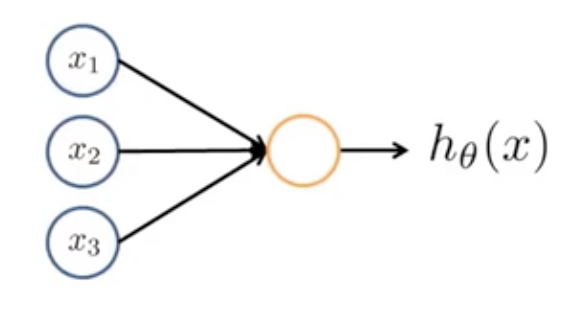

[吴恩达机器学习]7·初识神经网络
吴恩达机器学习系列课程：https://www.bilibili.com/video/BV164411b7dx
神经元模型

一个神经元就是一个函数，根据输入节点信息以及其权重，得到一个输出信息，即： \[ h_\theta(x)=f(\theta, x) \] 这里 \(\theta=\begin{bmatrix}\theta_0\\\theta_1\\\vdots\\\theta_n\end{bmatrix},\,x=\begin{bmatrix}x_0\\x_1\\\vdots\\x_n\end{bmatrix}\).
注意：上图省略了 \(x_0\equiv 1\) 这一偏置项。
\(h_\theta(x)\) 也称作激活函数，一般可以采取 \(\text{sigmoid}\) 函数 \(h_\theta(x)=g(\theta^Tx)=\frac{1}{1+e^{-\theta^Tx}}\).
神经网络

神经网络是好几层的神经元连接在一起的集合。第一层被称作输入层，最后一层被称作输出层，中间其他层被称作隐藏层
注意：上图依旧省略了 \(x_0(a_0^{(1)})\equiv a_0^{(2)}\equiv1\) 偏置项。
我们把第 \(i\) 层到第 \(i+1\) 层的传导单独拿出来分析：设 \(s_i\) 表示第 \(i\) 层的神经元数量（不包含偏置项），那么对于第 \(i+1\) 层的第 \(k\) 个神经元，有一个 \(\theta^{(i)}_k\) 与之对应，使得：\(a^{(i+1)}_k=h_{\theta^{(i)}_k}(\hat a^{(i)})=g\left({\theta_k^{(i)}}^T\hat a^{(i)}\right)\). 这里我用 \(\hat a^{(i)}\in\mathbb R^{s_i+1}\) 表示加上偏置项后的 \(a^{(i)}\). 我们可以把这写作矩阵形式： \[ a^{(i+1)}=g\left(\Theta^{(i)}\hat a^{(i)}\right) \] 这里的 \(\Theta^{(i)}\in\mathbb R^{s_{i+1}\times(s_i+1)}\).
其他很多地方会把偏置项对应的参数向量 \(b\) 单独拿出来，把上面的式子写作类似于： \[ a^{(i+1)}=g\left(\Theta^{(i)}a^{(i)}+b^{(i)}\right) \] 的形式。这里 \(\Theta^{(i)}\in\mathbb R^{s_{i+1}\times s_i},\,b\in\mathbb R^{s_{i+1}}\). 我这里依旧沿用吴恩达教授的写法习惯。
神经网络实现门电路
通过这个例子能够直观地理解神经网络中参数的作用。
考虑一个输入层有 \(2\) 个神经元（不包括偏置项）且取值 \(\in\{0,1\}\)、输出层有 \(1\) 个神经元且取值 \(\in\{0,1\}\) 的神经网络。如果我们将其参数设置为：\(\Theta^{(1)}=\begin{bmatrix}-30\\20\\20\end{bmatrix}\)，那么我们有：
| 输入1 | 输入 2 | 输出 |
|---|---|---|
| 0 | 0 | \(g(-30)\approx 0\) |
| 0 | 1 | \(g(-10)\approx 0\) |
| 1 | 0 | \(g(-10)\approx 0\) |
| 1 | 1 | \(g(10)\approx 1\) |
于是我们实现了一个与门的功能！
类似的，我们可以实现或门、非门，然后组合使用与、或、非门，可以用多层神经网络实现异或、同或门等其他电路功能。
实现
这一节的作业依旧是对手写数字进行识别，但是不要求我们自己寻找参数 \(\Theta\)，而是在 ex3weights.mat 中给出了。我们只需要根据神经网络的原理进行前向传播。
1 | |
各数字准确率和总准确率如下：
| 数字 | 准确率 |
|---|---|
| 1 | 98.2% |
| 2 | 97.0% |
| 3 | 96.0% |
| 4 | 96.8% |
| 5 | 98.4% |
| 6 | 98.6% |
| 7 | 97.0% |
| 8 | 98.2% |
| 9 | 95.8% |
| 0 | 99.2% |
| Total | 97.52% |
注：直接采用训练集进行测试其实是不严谨的做法。